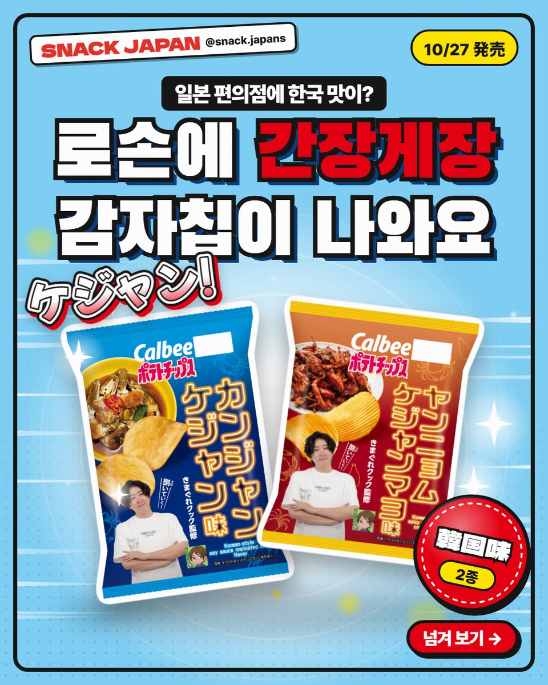
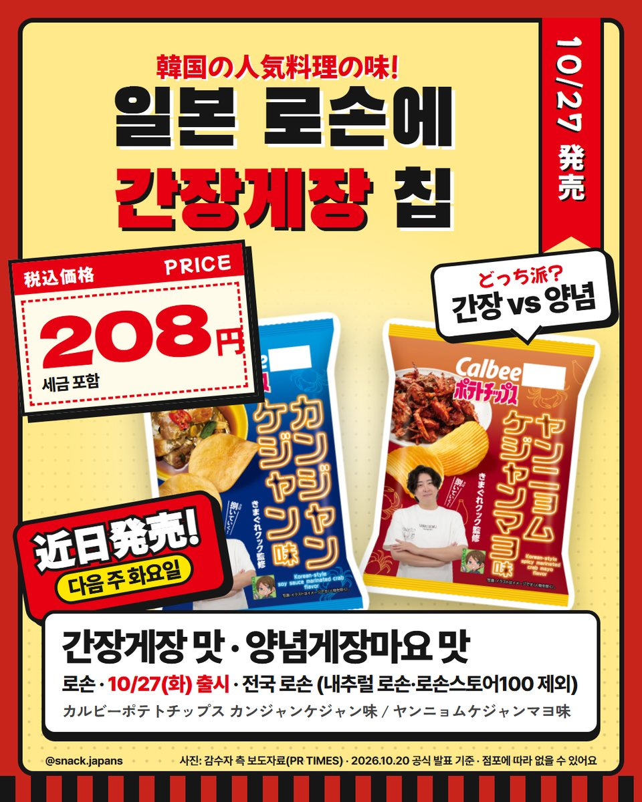
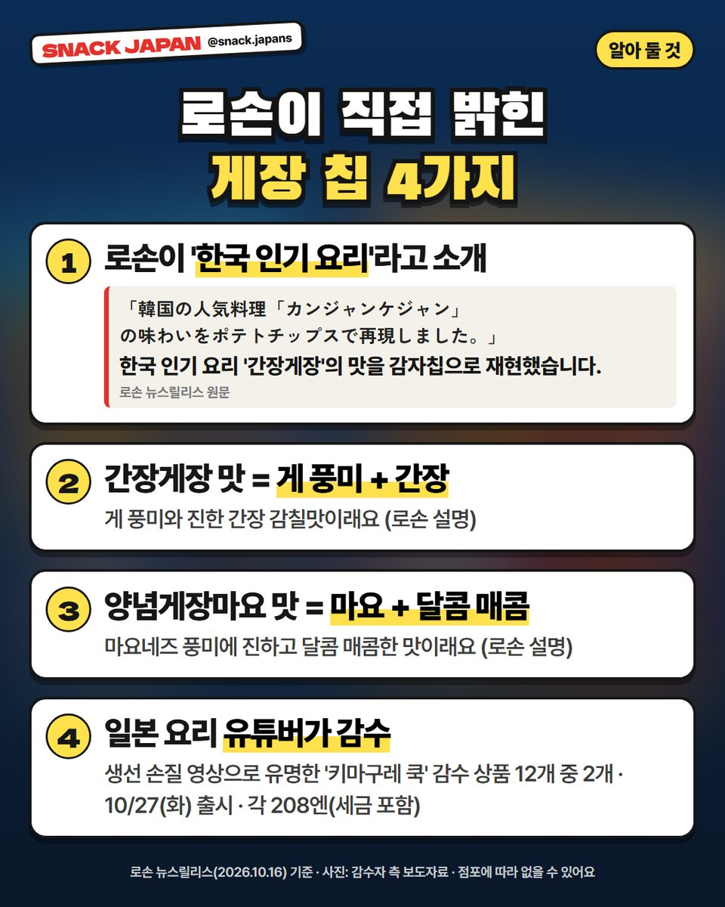
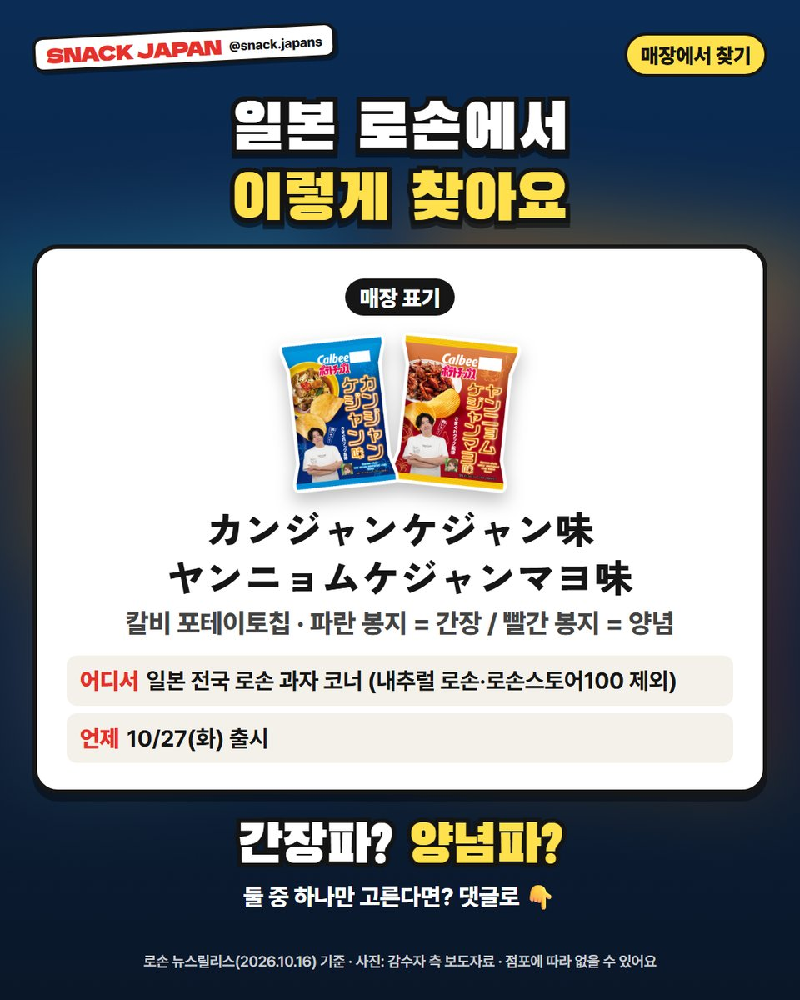

일본 로손 간장게장 감자칩 10/27 출시, 양념게장마요 맛도 같이 나와요
일본 편의점에 한국 맛이?! 로손이 직접 '한국 인기 요리'라고 소개한 칼비 게장 감자칩 2종, 10/27부터 전국 로손에서 팔아요.
간장게장이 감자칩이 됐다고요?? 🦀
그것도 일본 로손에서요!
한국 요리 맛이 일본 편의점 과자로 나오다니,
신기하지 않아요?
로손 보도자료 기준으로 정리해 볼게요!

1. 10/27(화) 출시 예정!
- 파는 곳: 일본 전국 로손 (내추럴 로손·로손스토어100 제외)
- 출시: 10/27(화)
- 맛: 간장게장 맛 (파란 봉지) · 양념게장마요 맛 (빨간 봉지)
- 가격: 사진 카드에 정리해 뒀어요

2. 로손이 직접 '한국 인기 요리'라고 소개!
로손 보도자료에
'한국 인기 요리 간장게장의 맛을 감자칩으로 재현했다'고
직접 나와 있어요.
- 간장게장 맛: 게 풍미 + 진한 간장 감칠맛 (로손 설명)
- 양념게장마요 맛: 마요네즈 풍미 + 진하고 달콤 매콤한 맛 (로손 설명)

3. 일본 요리 유튜버가 감수!
생선 손질 영상으로 유명한 일본 유튜버
'키마구레 쿡(きまぐれクック)'이 감수한
로손 상품 12개 중 2개예요.
봉지에도 'きまぐれクック監修'라고 적혀 있어요.
같은 날 간장게장 소스를 쓴 냉동 오코노미야키도 나온대요 (로손 발표).

4. 매장에서 이렇게 찾아요
과자 코너에서 칼비 포테이토칩을 찾아보세요.
- 간장게장 맛: カンジャンケジャン味 (파란 봉지)
- 양념게장마요 맛: ヤンニョムケジャンマヨ味 (빨간 봉지)
- 내용량(g)은 아직 공식 발표에 없어요
총평
- 추천: 간장게장 좋아하는 분, 일본 편의점 신상 구경하는 분
- 기준: 10월 16일 로손 공식 발표
- 참고: 점포에 따라 없을 수 있어요
간장파? 양념파?
일본 가면 둘 다 사서 비교해 보세요 😆
사진: 감수자 측 보도자료(PR TIMES)